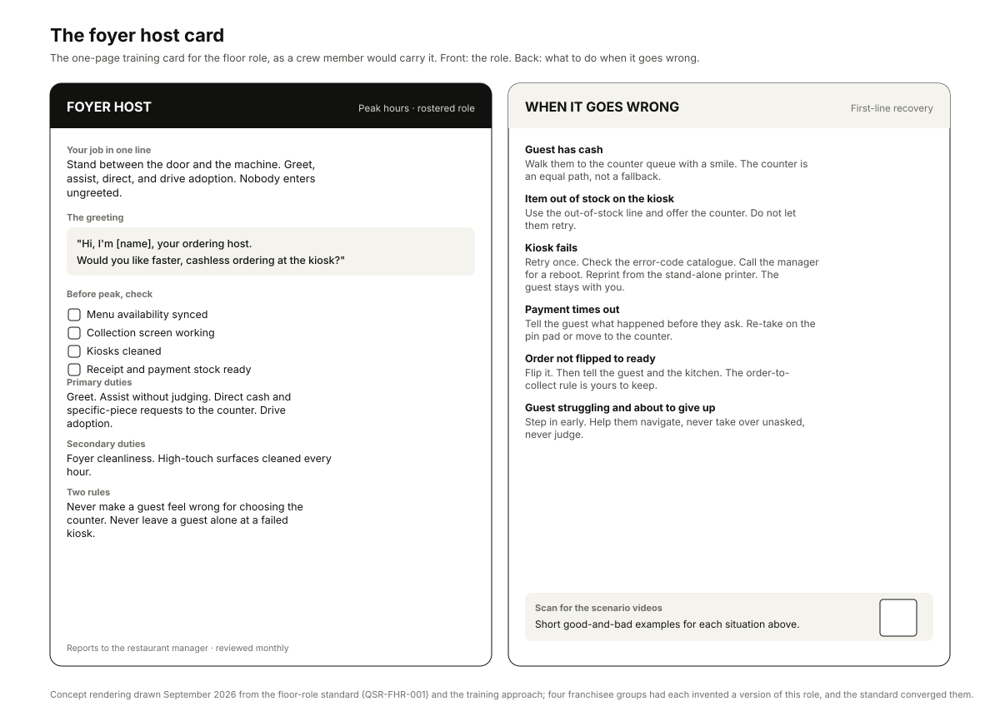
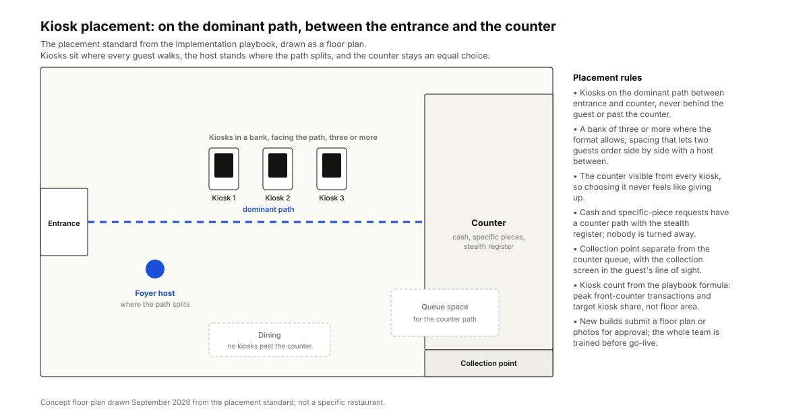

Kiosks installed in about half the regional network with a global mandate that every new build run them. The business case was proven in other markets. The operating system that should have served the channel, training, rollout, rostering and recovery, did not exist.
My roleExperience Designer leading the design work in a regional channel and learning working group.
CollaboratorsThe channel lead and the learning team; four franchisee groups running their own floor-role programmes; the global standards programme; a global design agency's omnichannel map; market leads.
ConstraintsLabour constraints that ruled out a network-wide mandate. Franchisee operating cultures that differ materially. Training built only where most restaurants had the technology, which kiosks fell below for years.
Key decisionInstallation is not adoption. Name the human role between the door and the machine, roster it, train it, and tie the standards to the audit so compliance is a fact rather than advice.
DeliveredFloor-role standard, training approach, placement and governance standards, the implementation playbook and the benchmark report.
Published and decidedBrand standards published, with the audit as the enforcement route from a set date. The flagship programme ran franchisee-led rather than mandated, and the cash-accepting kiosk was rejected on the evidence.
MeasuredThe mirror-store study on menu boards and the awareness check are the measurements the case holds. Adoption shares and audit compliance are tracked restaurant by restaurant by the channel team.
Shown hereFigures 1 and 2 were redrawn in September 2026 from the floor-role standard and the implementation playbook; the standard itself is quoted as written.
{kind=link}

The problem
The brief was direct: there was no process to train and upskill teams on kiosks once they were installed. Troubleshooting documents existed but were never sent to restaurants or collated. The training gap was a symptom. Four gaps surfaced in the first pass.
| Gap | What was actually true |
|---|---|
| No channel training | Onboarding courses for order-taking and register work had no self-service content. Training was only built where most restaurants had the technology, and kiosks fell below that bar for years. |
| No rollout process | No defined process for installing kiosks and bringing a team up to speed; user-guide distribution had lapsed entirely. |
| No floor role | The foyer role was not formalised. The time and attendance platform could not even roster someone as a host; the concierge section of the guide was outdated and stuck in an IT backlog. |
| No design for the channel's limits | The kiosk is not a replica of the register or the app: no cash, express-kiosk exclusions, menu mismatches, and no team script for a failed machine. |
Usage followed store format, customer flow and the presence of floor support, not the presence of the machine. Every uniform installation without the human half left adoption to chance and recorded service failures as kiosk complaints.
What I did
- Channel performance. Sales mix by store format and asset type, penetration and adoption, which showed the swing between drive-thru-led stores and the highest-usage franchisee group.
- Guest-feedback mining at two scales. The source was guest feedback running to hundreds of thousands of responses, comments and ratings. It was read at two scales: every self-service comment in a three-month pull read in depth, and a wide sweep across a much larger store population to measure how often the channel surfaced at all. The absence signal was the finding: the channel was near-invisible in the wide sweep, and where it appeared, staff recognition was the top positive theme.
- Benchmarking. Four franchisee groups running parallel floor-role programmes, compared as archetypes, plus a scan of markets with older kiosk footprints.
- Pilot measurement. Mirror-store surveys on menu-board removal, store-level adoption tracking, and a monthly cut benchmarking a pilot store pair.
- Mapping and design. The omnichannel journey on the agency's spine, seven insights, one concept converged from the four franchisee designs, the floor-role standard, the training ecosystem, labour-deployment arithmetic, the placement playbook, the troubleshooting FAQ and the governance roadmap.
What the research found
Installation is not adoption. The machine was the constant; the human was the variable.
The role already existed, four times. The best of the four franchisee designs converged into one standard rather than a fifth invention.
The failures were about people, recorded as machine complaints. A first-timer who gave up, a cash guest excluded, a failed kiosk, a dirty foyer nobody owned: each was logged as a kiosk problem.
Awareness of the flagship programme was zero in the sample. None of the restaurants sampled had implemented, or heard of, the programme meant to fix this.
Menu boards were not the comprehension problem. The mirror study on menu-board removal showed comprehension held without them where a host was present, which freed wall space and settled a long argument.
Three decisions
Name the role, roster it, train it
Evidence. Adoption tracked floor support; the four franchisee programmes; the time and attendance platform unable to roster the role.
Alternative considered. Better signage and a kiosk-side help screen. Rejected: the failures happened before the screen and after it, at the door and at the hand-off.
What we did. A floor-role standard with triggers (a new install, or adoption below the target share), presence at peak, a greeting script, pre-peak checks, primary and secondary duties, exception paths and KPIs, and the platform change that made it rosterable.
Design the counter as an equal path, and reject the cash machine
Evidence. Cash guests waiting at the counter with no path; the cost and failure profile of cash-accepting kiosks in the benchmark markets.
Alternative considered. Cash-accepting kiosks. Rejected on evidence: cost, jams and a second failure mode, for a guest the host can walk to a register in ten seconds.
What we did. A scripted counter path with a stealth register absorbing the cash queue, a redeployment rule that converts freed cashiers into packers and presenters without adding labour, and a rule that no guest is made to feel wrong for choosing the counter.
Tie the standards to the audit, with an escape valve
Evidence. Standards had been advisory and invisible; the awareness check found nobody had heard of the programme.
Alternative considered. Mandate the flagship programme network-wide. Rejected: labour constraints made it unenforceable and franchisee cultures differ.
What we did. Placement, hardware and operating standards linked to the audit from a set date, a compliance target for existing stores, an exception process through the annual operating plan, and the flagship programme run franchisee-led.
What was delivered
{kind=link}

The floor-role standard as it was written: fields, not prose, so it can be versioned, reviewed and checked.
sop: QSR-FHR-001 Foyer host floor-role standard version 1.0
owner: channel_lead
triggers:
- kiosk_installed AND weeks_since_install < 26
- adoption_share < target # share of in-store sales via kiosk
presence: { required: peak_hours, rosterable: true, reporting: restaurant_manager }
scripts:
greeting: "Hi, I'm [name], your ordering host. Would you like faster, cashless ordering at the kiosk?"
assist: help_navigate_without_judgment
direct: cash_and_specific_piece_requests_to_counter_queue
pre_peak_checks: [menu_availability_synced, collection_screen_functional, kiosks_cleaned, receipt_and_payment_stock_ok]
duties:
primary: [greet, assist, direct, drive_adoption]
secondary: [foyer_cleanliness, high_touch_surface_cleaning_hourly]
exceptions:
cash_guest: counter_queue_with_smile
out_of_stock: script_out_of_stock + counter_fallback
tech_failure: first_line_ladder # retry, error-code catalogue, manager reboot, stand-alone reprint
kpis: [adoption_share, feedback_staff_recognition, feedback_cleanliness, cash_wait_complaints, first_line_recovery_rate]
review_cadence: monthly
Also delivered: the channel review and benchmark report, the omnichannel journey map and the kiosk order workflow below, the training ecosystem (huddle guide, job aids, station stickers linked to scenario videos, the card above), deployment cards and the redeployment calculator, the implementation playbook with the kiosk-count formula and the submission and approval flow for new installations, the troubleshooting FAQ with the error-code catalogue, the placement self-assessment template, and the governance roadmap.
| Stage / lane | Enter & greet | Order | Pay | Prepare | Collect & enjoy |
|---|---|---|---|---|---|
| Guest (frontstage) | Greeted within secondsThe guest enters and is met at the door: before the redesign nobody owned this space. | Guided first orderAssist script: help navigate, never judge, offer the counter as an equal path. | Card at the kioskKiosks take no cash by design; cash guests are directed to the counter queue with the stealth register. | Waits at pick-up queueCollection screen shows order status; “Checking kitchen” delays are acknowledged and reassured. | Order verified at hand-offThe presenter confirms the order; the feedback link lands on the receipt. |
| Foyer host (frontstage) | Greeting + cash-or-card askNo customer enters without being greeted; the direct script sends cash and specific-piece requests to the counter. | Assist + pre-peak checksMenu availability synced, collection screen functional, kiosks cleaned, receipt and payment stock ready. | Cash path to the counterCash guests are never abandoned at the machine; the stealth register absorbs the queue. | Ready flip within 60 sThe order is flipped to ready inside the 60-second order-to-collect rule. | Hand-off + parting recognitionThe guest leaves recognised, not ignored: the moment that drives the feedback theme. |
| Restaurant (backstage) | Rostering + cleanlinessThe foyer host is a rostered role: the time & attendance platform now supports it; hourly high-touch cleaning. | POS receives order; menu syncMenu availability is refreshed nightly; express-kiosk exclusions and availability mismatches are scripted. | Payment state verifiedPin-pad timeouts and failed payments have defined responses before the guest escalates. | Kitchen display + packerOne packer/presenter per redeployed cashier assembles the order to the display. | Collect / recoveryFirst-line ladder: retry → error-code catalogue (100–699) → manager reboot → stand-alone reprint. |
| Measures | Greet rate; cash routedEvery guest greeted at peak; cash guests routed, not turned away. | Assisted first orderGuided first order completes in ~60 seconds. | Counter wait ≤ 5 minGuest through the system inside the 5-minute golden rule. | Order-to-collect ≤ 60 sReady flip measured per order. | Feedback theme mixStaff recognition top positive theme; channel near-invisible in the wide sweep. |
| Failure points | F-01 No one owns the doorNo named foyer role: nobody greets; the space between door and machine is unowned. | F-02 First-timer strugglesGuest gives up at the kiosk and asks staff for help: with no assist script. | F-03 Cash guest excludedlong counter waits; cash customers have no path but the queue. | F-04 Order forgotten / tech failureOrder not flipped; all-kiosk outages and payment timeouts with no team response. | F-05 Machine blamed in feedbackA service failure is recorded as a kiosk complaint; no recovery script. |

Working files, anonymised: the benchmark report. The brief, the channel analysis, the journey map, the blueprint and the analysis report stayed working documents with the business.
How it would be measured
Penetration (share of stores equipped), adoption (share of in-store sales), sales and conversion, technology performance and guest feedback, the five the channel lead's remit named.
BaselinesThe channel-mix baseline by store format; the deep-dive and wide-sweep feedback coding; the pilot store pair's monthly cut; the awareness check.
Role measuresGreet rate at peak; cash guests routed; assisted first orders completing inside the standard time; order-to-collect inside the rule; first-line recovery rate; the feedback theme mix with staff recognition on top.
GovernanceShare of stores compliant with the placement and operating standards at each audit; exceptions granted through the annual operating plan.
LabourThe redeployment rule: freed cashiers become packers and presenters, so service capacity rises without added headcount. Tracked as redeployed hours, not saved hours.
Held backAdoption shares and audit compliance are held by the channel team, which tracks them restaurant by restaurant; what travels is the finding that installation is not adoption, and the floor-role standard built on it.
What I would do differently: run the post-implementation phone check as part of the programme from the first installation, rather than as the check that found nobody had heard of it.
Sponsor, scope and gates
The regional channel lead, with the learning team as co-owner and the global standards programme as the enforcement route.
Scope inChannel strategy for penetration and adoption; the floor-role standard; the training ecosystem; labour deployment arithmetic; journey mapping; placement and governance standards.
Scope outKiosk hardware and software; the voice-ordering initiative referenced as a future direction; franchisee labour models beyond the redeployment rule.
Decisions requestedAdopt the floor-role standard and make the role rosterable; fund the training ecosystem; reject the cash-accepting kiosk; link the standards to the audit with an exception process; run the flagship programme franchisee-led.
Timeline and gatesTwenty-eight weeks: research and evidence (weeks 1 to 8); synthesis (9 to 11); journey mapping (12 to 14); concept and standard (15 to 18); training and playbook (19 to 22); standards and governance (23 to 25); measurement (26 to 28).
Risks managedFranchisee variance (converge, never impose uniformity); labour constraints (redeployment rather than headcount; franchisee-led flagship); standards ignored (audit-linked with an escape valve); the channel blamed for service failures (recovery scripts and the feedback theme mix).